Unit 4 · Session 2 · Thu, Nov 12, 2026
5 parts · every fact cited to its slide or textbook page. About 140 minutes of focused study.
IO = syllabus unit objective · SO = this session's objectives slide.
| ID | Objective | Covered in |
|---|---|---|
| IO4.1 | Identify major pharmacologic classes used in the management of endocrine conditions and describe their mechanisms of action. | Part 1 · Gonadal Hormones & Inhibitors Part 2 · Insulin Part 3 · Non-Insulin Glucose-Lowering Drugs Part 4 · Parathyroid Disorders |
| IO4.2 | Describe the indications, contraindications, adverse effects, and clinically significant interactions associated with medications used to treat endocrine conditions. | Part 1 · Gonadal Hormones & Inhibitors Part 2 · Insulin Part 3 · Non-Insulin Glucose-Lowering Drugs |
| IO4.3 | Compare pharmacologic agents within and across therapeutic classes to distinguish clinically relevant differences in efficacy, safety, and use. | Part 3 · Non-Insulin Glucose-Lowering Drugs Part 5 · Putting It All Together: Endocrine Toolkit |
| IO4.4 | Select appropriate pharmacologic therapy for common endocrine conditions based on clinical presentation and patient-specific factors. | Part 1 · Gonadal Hormones & Inhibitors Part 3 · Non-Insulin Glucose-Lowering Drugs Part 4 · Parathyroid Disorders Part 5 · Putting It All Together: Endocrine Toolkit |
| IO4.5 | Identify appropriate dosing, administration, and monitoring considerations for medications used in endocrine conditions. | Part 2 · Insulin Part 3 · Non-Insulin Glucose-Lowering Drugs Part 4 · Parathyroid Disorders |
| IO4.6 | Explain important medication-use and safety information to patients receiving pharmacotherapy for endocrine conditions. | Part 1 · Gonadal Hormones & Inhibitors Part 2 · Insulin Part 5 · Putting It All Together: Endocrine Toolkit |
| SO1 | Describe the mechanisms and clinical uses of gonadal hormone agents, including combined hormonal contraception, SERMs, and androgens/antiandrogens. | Part 1 · Gonadal Hormones & Inhibitors |
| SO2 | Classify glucose-lowering drugs by mechanism and site of action, and compare agents on efficacy, hypoglycemia risk, and key adverse effects. | Part 2 · Insulin Part 3 · Non-Insulin Glucose-Lowering Drugs |
| SO3 | Distinguish hyperparathyroidism from hypoparathyroidism and identify the drug strategy used for each. | Part 4 · Parathyroid Disorders |
| SO4 | Identify key contraindications, adverse effects, and drug interactions throughout. | Part 1 · Gonadal Hormones & Inhibitors Part 3 · Non-Insulin Glucose-Lowering Drugs |
| SO5 | Apply the full Endocrine pharmacology toolkit to integrated clinical scenarios, and complete a cumulative recall quiz spanning both sessions. | Part 5 · Putting It All Together: Endocrine Toolkit |
Not covered in materials
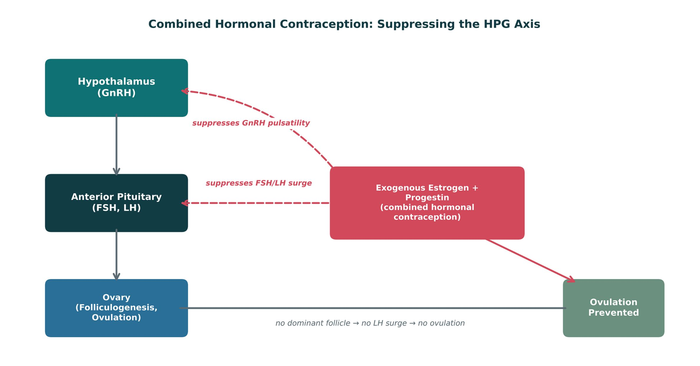
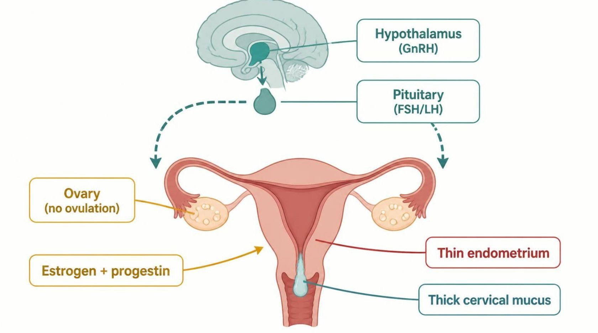
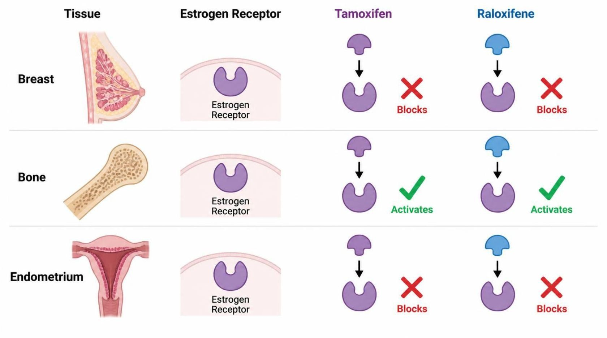
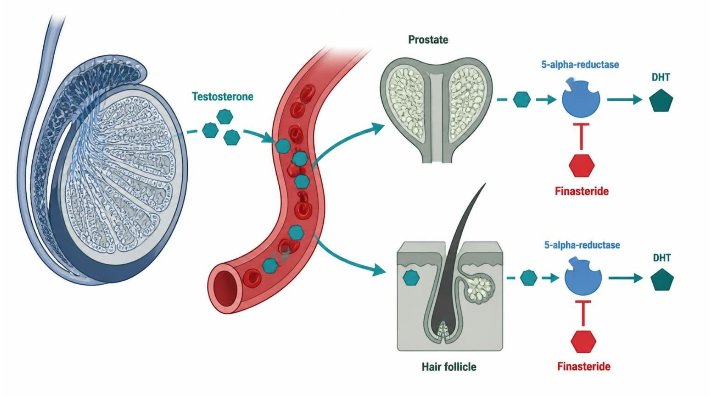
| Drug | Class | Formulation | Adult dose | Indications |
|---|---|---|---|---|
| Combined oral contraceptives (ethinyl estradiol plus a progestin) | Estrogen plus progestin | Tablets (21/28-day packs); patch; vaginal ring | Ethinyl estradiol 20-35 mcg plus a progestin PO daily; patch weekly for 3 weeks; ring 3 weeks in, 1 week out | Contraception, cycle control, dysmenorrhea, acne |
| Norethindrone (progestin-only pill) | Progestin | Tablet 0.35 mg | 0.35 mg PO daily at the same time, with no pill-free days | Contraception when estrogen is contraindicated, breastfeeding |
| Medroxyprogesterone depot (Depo-Provera) | Injectable progestin | IM 150 mg/mL; SC 104 mg/0.65 mL | 150 mg IM (or 104 mg SC) every 12-13 weeks | Contraception, endometriosis pain, endometrial protection |
| Levonorgestrel IUD (Mirena) | Intrauterine progestin | Intrauterine system 52 mg (about 20 mcg/day) | One system placed in the uterus; effective up to 8 years for contraception | Contraception, heavy menstrual bleeding, endometrial protection |
How to tell them apart. Sources: S37; S38; S39; S40
| Drug | Adverse effects | Contraindications | Toxicity / overdose |
|---|---|---|---|
| Combined oral contraceptives (ethinyl estradiol plus a progestin) | Nausea, breast tenderness, breakthrough bleeding, headache | VTE or stroke history, smoker 35 or older, migraine with aura, estrogen-sensitive cancer, uncontrolled hypertension, liver disease | VTE, stroke and MI risk; hyperkalemia with drospirenone; rifampin and some antiepileptics lower efficacy |
| Norethindrone (progestin-only pill) | Irregular bleeding, headache, acne, breast tenderness | Breast cancer, undiagnosed vaginal bleeding, liver tumor | Efficacy falls if a dose is more than 3 hours late; ectopic pregnancy risk if it fails |
| Medroxyprogesterone depot (Depo-Provera) | Irregular bleeding, weight gain, delayed return of fertility | Breast cancer, pregnancy, unexplained vaginal bleeding | Boxed warning: loss of bone mineral density; limit prolonged use; VTE |
| Levonorgestrel IUD (Mirena) | Irregular spotting, amenorrhea, ovarian cysts, pelvic pain | Pregnancy, pelvic infection, uterine anomaly, breast cancer | Uterine perforation, expulsion, infection; check strings |
How to tell them apart. Sources: S37; S38; S39; S40
| Drug | Class | Formulation | Adult dose | Indications |
|---|---|---|---|---|
| Tamoxifen (Nolvadex) | Selective estrogen-receptor modulator | Tablet 10/20 mg | 20 mg PO daily for 5-10 years in breast cancer | Breast cancer treatment and risk reduction, DCIS |
| Raloxifene (Evista) | Selective estrogen-receptor modulator | Tablet 60 mg | 60 mg PO daily | Postmenopausal osteoporosis treatment and prevention, breast cancer risk reduction |
| Testosterone (cypionate, gel, patch) | Androgen | IM cypionate or enanthate 100-200 mg/mL; gel; patch; pellets | Cypionate 100-200 mg IM every 2 weeks (or 50-100 mg weekly); gel 50-100 mg daily | Male hypogonadism, delayed puberty |
| Finasteride (Proscar, Propecia) | 5-alpha-reductase inhibitor | Tablet 5 mg (BPH); 1 mg (hair loss) | 5 mg PO daily for BPH; 1 mg PO daily for male-pattern hair loss | BPH, androgenetic alopecia |
How to tell them apart. Sources: S41; S42; S43; S44
| Drug | Adverse effects | Contraindications | Toxicity / overdose |
|---|---|---|---|
| Tamoxifen (Nolvadex) | Hot flashes, vaginal discharge, menstrual irregularity | History of DVT or PE, pregnancy, warfarin (for risk-reduction use) | Endometrial cancer, VTE, stroke, cataracts; CYP2D6 inhibitors (paroxetine, fluoxetine) reduce activation |
| Raloxifene (Evista) | Hot flashes, leg cramps, peripheral edema | VTE history, pregnancy | Boxed warning: VTE and fatal stroke risk; does not stimulate the endometrium |
| Testosterone (cypionate, gel, patch) | Acne, erythrocytosis, sleep apnea, gynecomastia, testicular atrophy | Prostate or breast cancer, polycythemia, pregnancy | Erythrocytosis, thrombosis, secondary exposure with gels; monitor hematocrit, PSA, lipids |
| Finasteride (Proscar, Propecia) | Decreased libido, erectile dysfunction, reduced ejaculate, gynecomastia | Pregnancy and women who may be pregnant (do not handle crushed tablets), hypersensitivity | Lowers PSA by about half; reports of depression; teratogenic to a male fetus |
How to tell them apart. Sources: S41; S42; S43; S44
Not covered in materials
Not covered in materials
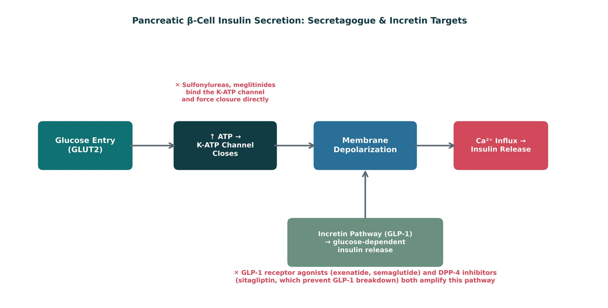
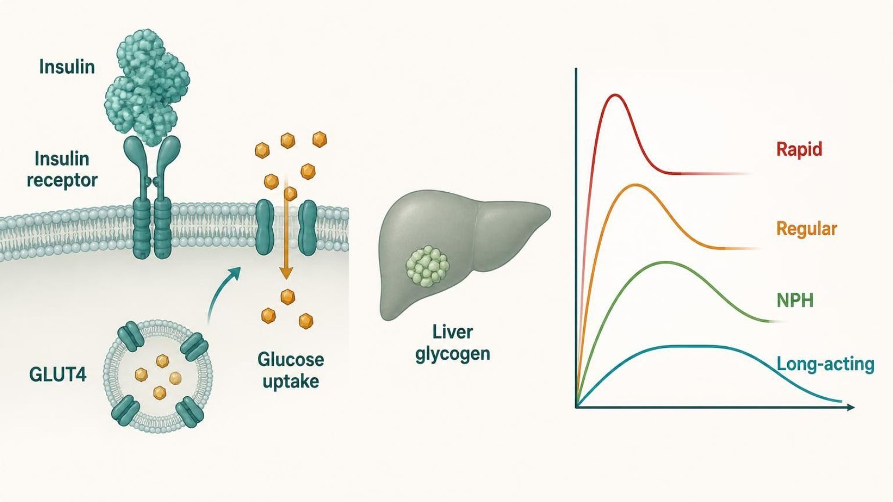
| Type | Examples | Onset / profile | Use |
|---|---|---|---|
| Rapid-acting | Lispro, aspart | ~15 min | Mealtime |
| Short-acting | Regular | ~30 min | 30 min before meals; only IV insulin |
| Intermediate | NPH | Cloudy; peak ~4–10 h; variable | Basal/peak coverage |
| Long-acting | Glargine, detemir, degludec | Relatively peakless | Basal coverage |
How to tell them apart. Sources: S12; S13
| Drug | Class | Formulation | Adult dose | Indications |
|---|---|---|---|---|
| Insulin lispro (Humalog) | Rapid-acting insulin analog | SC or IV vial or pen 100 or 200 units/mL | Mealtime dose 0-15 minutes before eating; total daily insulin about 0.5-1 unit/kg; onset about 15 minutes | Type 1 and type 2 diabetes |
| Insulin aspart (NovoLog) | Rapid-acting insulin analog | SC or IV vial and pen cartridges 100 units/mL | Mealtime dose 0-15 minutes before eating; part of total daily insulin 0.5-1 unit/kg | Type 1 and type 2 diabetes, pump therapy |
| Regular insulin (Humulin R, Novolin R) | Short-acting human insulin | Vial 100 units/mL; U-500 concentrate; IV | SC 30 minutes before meals; IV infusion for DKA about 0.1 units/kg/hour | Diabetes mellitus, DKA and hyperkalemia (IV) |
| NPH insulin (Humulin N, Novolin N) | Intermediate-acting human insulin | Vial or pen 100 units/mL (cloudy suspension) | SC once or twice daily; basal start about 0.1-0.2 units/kg; peaks at 4-10 hours | Type 1 and type 2 diabetes, steroid-induced hyperglycemia |
| Insulin glargine (Lantus, Basaglar, Toujeo) | Long-acting basal insulin analog | SC pen or vial 100 or 300 units/mL | Start 10 units SC daily (or 0.1-0.2 units/kg) and titrate to fasting glucose | Type 1 and type 2 diabetes (basal) |
| Insulin detemir (Levemir) | Long-acting basal insulin analog | SC pen or vial 100 units/mL | 10 units (or 0.1-0.2 units/kg) once or twice daily, titrated to fasting glucose | Type 1 and type 2 diabetes (basal) |
| Insulin degludec (Tresiba) | Ultra-long-acting basal insulin analog | SC pen 100 or 200 units/mL | 10 units (or 0.1-0.2 units/kg) once daily; dosing interval flexible if at least 8 hours apart | Type 1 and type 2 diabetes (basal) |
How to tell them apart. Sources: S45; S46; S47; S48; S49; S50; S51
| Drug | Adverse effects | Contraindications | Toxicity / overdose |
|---|---|---|---|
| Insulin lispro (Humalog) | Hypoglycemia, weight gain, lipohypertrophy, hypokalemia | Hypoglycemia, hypersensitivity | Severe hypoglycemia, hypokalemia; dose errors with concentrated pens; rotate sites |
| Insulin aspart (NovoLog) | Hypoglycemia, weight gain, injection-site reactions | Hypoglycemia, hypersensitivity | Severe hypoglycemia; hypokalemia; do not mix in a pump with other insulins |
| Regular insulin (Humulin R, Novolin R) | Hypoglycemia, weight gain, hypokalemia (IV) | Hypoglycemia | Only regular insulin may be given IV; U-500 dosing errors; monitor potassium |
| NPH insulin (Humulin N, Novolin N) | Hypoglycemia (nocturnal), weight gain, variable absorption | Hypoglycemia | Nocturnal hypoglycemia at the peak; mix suspension gently before use |
| Insulin glargine (Lantus, Basaglar, Toujeo) | Hypoglycemia, weight gain, injection-site reactions | Hypoglycemia, hypersensitivity | Hypoglycemia; do not mix with other insulins; U-300 is not interchangeable unit for unit |
| Insulin detemir (Levemir) | Hypoglycemia, weight gain, injection-site reactions | Hypoglycemia | Hypoglycemia; duration depends on dose; availability varies, so verify |
| Insulin degludec (Tresiba) | Hypoglycemia, weight gain, injection-site reactions | Hypoglycemia | Lower nocturnal hypoglycemia than glargine; steady state in 3-4 days; check pen strength |
How to tell them apart. Sources: S45; S46; S47; S48; S49; S50; S51
Not covered in materials
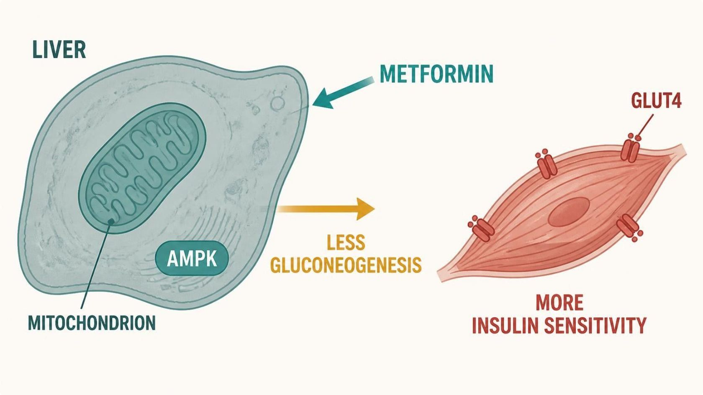
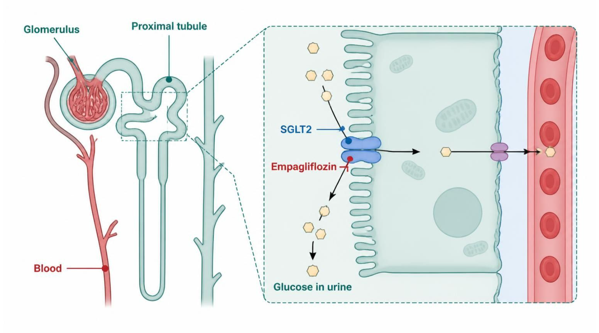
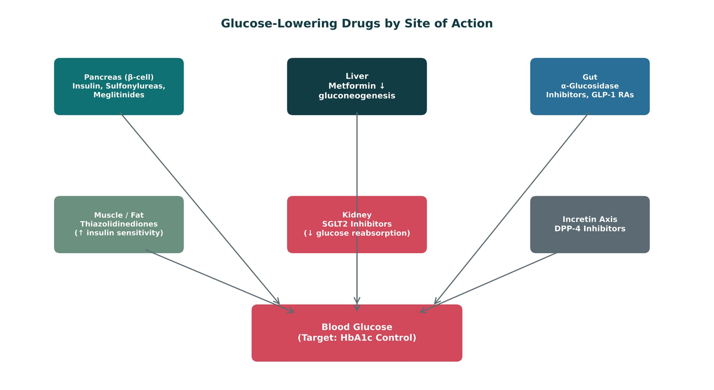
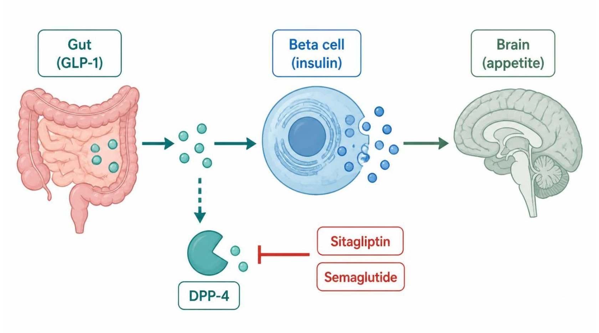
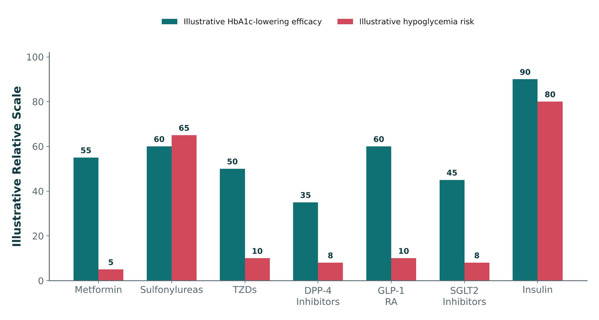
| Class | Example | Mechanism | Key risk |
|---|---|---|---|
| Metformin | Metformin | ↓ Hepatic gluconeogenesis | GI, B12; lactic acidosis — avoid eGFR < 30 |
| Sulfonylureas / meglitinides | Glipizide, glyburide, repaglinide | Force K-ATP closure | Highest oral hypoglycemia risk |
| TZDs | Pioglitazone | ↑ Peripheral insulin sensitivity | Fluid retention/heart failure, weight gain |
| SGLT2 inhibitors | Empagliflozin | Block renal glucose reabsorption | Genital mycotic infection, euglycemic DKA |
| GLP-1 RAs | Exenatide, liraglutide, semaglutide | Glucose-dependent insulin; slow emptying | GI, pancreatitis; MTC/MEN2 |
| DPP-4 inhibitors | Sitagliptin, linagliptin | Protect endogenous GLP-1 | Weight-neutral; low hypoglycemia |
How to tell them apart. Sources: S14; S18
| Drug | Class | Formulation | Adult dose | Indications |
|---|---|---|---|---|
| Metformin (Glucophage) | Biguanide | Tablet 500/850/1,000 mg; ER tablet; oral solution | Start 500 mg PO daily or BID with meals, titrate to 1,000 mg BID (max 2,550 mg/day) | Type 2 diabetes, prediabetes, PCOS (off-label) |
| Glipizide (Glucotrol) | Sulfonylurea (second generation) | Tablet 5/10 mg; XL 2.5/5/10 mg | 5 mg PO daily 30 minutes before breakfast, titrate (max 40 mg/day; XL 20 mg) | Type 2 diabetes |
| Glyburide (Diabeta, Micronase) | Sulfonylurea (second generation) | Tablet 1.25/2.5/5 mg; micronized 1.5/3/6 mg | 2.5-5 mg PO daily with breakfast, titrate (max 20 mg/day) | Type 2 diabetes |
| Repaglinide (Prandin) | Meglitinide | Tablet 0.5/1/2 mg | 0.5-2 mg PO before each meal (skip if the meal is skipped), max 16 mg/day | Type 2 diabetes (mealtime) |
| Pioglitazone (Actos) | Thiazolidinedione (PPAR-gamma agonist) | Tablet 15/30/45 mg | 15-30 mg PO daily, max 45 mg | Type 2 diabetes |
| Empagliflozin (Jardiance) | SGLT2 inhibitor | Tablet 10/25 mg | 10 mg PO once daily in the morning, may increase to 25 mg | Type 2 diabetes with cardiorenal benefit, heart failure, CKD |
How to tell them apart. Sources: S52; S53; S54; S55; S56; S57
| Drug | Adverse effects | Contraindications | Toxicity / overdose |
|---|---|---|---|
| Metformin (Glucophage) | Nausea, diarrhea, metallic taste, vitamin B12 deficiency | eGFR below 30, acute metabolic acidosis, hypersensitivity | Lactic acidosis (renal impairment, contrast, alcohol, sepsis); hold around iodinated contrast; monitor B12 |
| Glipizide (Glucotrol) | Hypoglycemia, weight gain, nausea, rash | Type 1 diabetes, DKA, severe liver disease; caution in sulfonamide allergy | Prolonged hypoglycemia (older adults, renal impairment); alcohol and beta-blockers worsen or mask it |
| Glyburide (Diabeta, Micronase) | Hypoglycemia, weight gain, nausea | Type 1 diabetes, DKA, bosentan co-use | Active metabolites cause prolonged hypoglycemia; avoid in older adults and CKD |
| Repaglinide (Prandin) | Hypoglycemia, weight gain, upper respiratory infection | Type 1 diabetes, DKA, gemfibrozil co-use | Hypoglycemia; gemfibrozil markedly raises levels (CYP2C8); CYP3A4 interactions |
| Pioglitazone (Actos) | Edema, weight gain, fractures, upper respiratory infection | NYHA class III-IV heart failure (boxed), active bladder cancer, liver disease | Heart failure exacerbation, fractures in women, possible bladder cancer; monitor weight and edema |
| Empagliflozin (Jardiance) | Genital yeast infections, UTI, volume depletion | Dialysis, hypersensitivity; not indicated in type 1 diabetes | Euglycemic DKA (hold when ill or fasting), Fournier gangrene, hypotension |
How to tell them apart. Sources: S52; S53; S54; S55; S56; S57
| Drug | Class | Formulation | Adult dose | Indications |
|---|---|---|---|---|
| Exenatide (Byetta, Bydureon) | GLP-1 receptor agonist | SC pen 5/10 mcg (Byetta); 2 mg weekly (Bydureon) | Byetta 5 mcg BID within 60 minutes before meals, then 10 mcg BID; Bydureon 2 mg SC once weekly | Type 2 diabetes |
| Liraglutide (Victoza, Saxenda) | GLP-1 receptor agonist | SC pen 18 mg/3 mL | Victoza 0.6 mg daily for 1 week, then 1.2-1.8 mg daily; Saxenda up to 3 mg daily | Type 2 diabetes, CV risk reduction, chronic weight management (Saxenda) |
| Semaglutide (Ozempic, Wegovy, Rybelsus) | GLP-1 receptor agonist | SC pen weekly; oral tablet 3/7/14 mg | Ozempic 0.25 mg weekly for 4 weeks, then 0.5-2 mg weekly; Rybelsus 3 mg daily, then 7-14 mg | Type 2 diabetes, CV risk reduction, obesity (Wegovy) |
| Sitagliptin (Januvia) | DPP-4 inhibitor | Tablet 25/50/100 mg | 100 mg PO daily; 50 mg if eGFR 30-45; 25 mg if below 30 | Type 2 diabetes |
| Linagliptin (Tradjenta) | DPP-4 inhibitor | Tablet 5 mg | 5 mg PO daily; no renal adjustment | Type 2 diabetes |
How to tell them apart. Sources: S58; S59; S60; S61; S62
| Drug | Adverse effects | Contraindications | Toxicity / overdose |
|---|---|---|---|
| Exenatide (Byetta, Bydureon) | Nausea, vomiting, diarrhea, injection-site nodules | Medullary thyroid cancer or MEN2 (Bydureon), CrCl below 30, severe gastroparesis | Pancreatitis, thyroid C-cell tumor warning (Bydureon), renal injury |
| Liraglutide (Victoza, Saxenda) | Nausea, vomiting, diarrhea, constipation, headache | Personal or family medullary thyroid cancer, MEN2, pancreatitis history | Boxed thyroid C-cell tumors, pancreatitis, gallbladder disease, dehydration with kidney injury |
| Semaglutide (Ozempic, Wegovy, Rybelsus) | Nausea, vomiting, diarrhea, constipation, abdominal pain | Personal or family medullary thyroid cancer, MEN2, hypersensitivity | Boxed thyroid C-cell tumors, pancreatitis, retinopathy complications, gallbladder disease, aspiration risk with anesthesia |
| Sitagliptin (Januvia) | Upper respiratory infection, headache, nasopharyngitis | Hypersensitivity (anaphylaxis, angioedema) | Pancreatitis, severe joint pain; low hypoglycemia risk when used alone |
| Linagliptin (Tradjenta) | Nasopharyngitis, cough, diarrhea | Hypersensitivity | Pancreatitis, bullous pemphigoid, arthralgia; eliminated mainly through bile |
How to tell them apart. Sources: S58; S59; S60; S61; S62
Not covered in materials
Not covered in materials
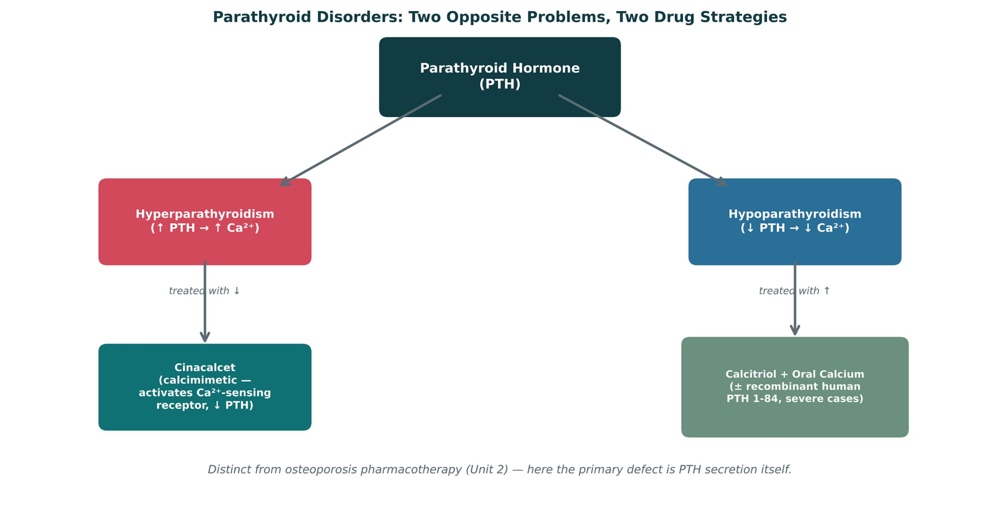
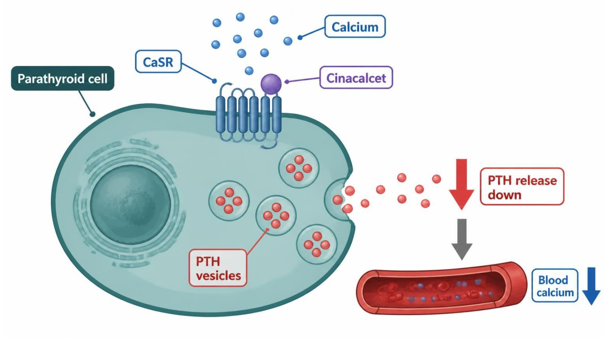
| Hyperparathyroidism | Hypoparathyroidism | |
|---|---|---|
| Drug | Cinacalcet (calcimimetic) | Calcitriol + oral calcium; PTH 1-84 if refractory |
| How | Activates CaSR → ↓ PTH | Bypasses the PTH-dependent vitamin D activation |
| Typical patient | CKD on dialysis; parathyroid carcinoma | Post-thyroidectomy |
| Monitor for | Hypocalcemia | Hypercalcemia / hypercalciuria |
How to tell them apart. Sources: S25; S26; S27
| Drug | Class | Formulation | Adult dose | Indications |
|---|---|---|---|---|
| Cinacalcet (Sensipar) | Calcimimetic (CaSR activator) | Tablet 30/60/90 mg | 30 mg PO daily with food, titrate every 2-4 weeks (up to 180 mg/day) by PTH and calcium | Secondary hyperparathyroidism on dialysis, parathyroid carcinoma, primary hyperparathyroidism when surgery is not possible |
| Calcitriol (Rocaltrol) | Active vitamin D (1,25-dihydroxy) | Capsule 0.25/0.5 mcg; solution 1 mcg/mL; IV | Hypoparathyroidism: 0.25-2 mcg PO daily, titrated to calcium | Hypoparathyroidism, CKD secondary hyperparathyroidism, hypocalcemia |
| Recombinant PTH 1-84 (Natpara) | Parathyroid hormone replacement | SC pen cartridges 25/50/75/100 mcg | 50 mcg SC daily in the thigh, adjusted by 25 mcg up to 100 mcg | Hypoparathyroidism not controlled on calcium and vitamin D |
| Calcium carbonate or citrate | Calcium supplement | Carbonate 500-1,250 mg tablets; citrate tablets | 1,000-2,000 mg elemental calcium daily in divided doses (500-600 mg per dose) | Hypocalcemia, hypoparathyroidism, osteoporosis |
How to tell them apart. Sources: S63; S64; S65; S66
| Drug | Adverse effects | Contraindications | Toxicity / overdose |
|---|---|---|---|
| Cinacalcet (Sensipar) | Nausea, vomiting, diarrhea, paresthesias, hypocalcemia | Hypocalcemia at start | Severe hypocalcemia (QT prolongation, seizures); CYP2D6 inhibitor; monitor calcium and PTH |
| Calcitriol (Rocaltrol) | Hypercalcemia, hypercalciuria, nausea, constipation | Hypercalcemia, vitamin D toxicity | Hypercalcemia, kidney stones, calcification; monitor calcium, phosphate, urine calcium |
| Recombinant PTH 1-84 (Natpara) | Hypercalcemia, hypocalcemia, paresthesias, headache | Hypersensitivity; caution with osteosarcoma risk factors | Boxed osteosarcoma warning; severe hypocalcemia if stopped abruptly; availability is restricted, so verify current status |
| Calcium carbonate or citrate | Constipation, bloating, hypercalcemia | Hypercalcemia, hypercalciuria, kidney stones | Hypercalcemia (especially with calcitriol); carbonate needs food and acid (citrate for PPI users); separate from levothyroxine |
How to tell them apart. Sources: S63; S64; S65; S66
| Patient | Approach | Biggest safety check |
|---|---|---|
| A · Graves disease, thyroid storm | PTU | Liver toxicity |
| B · Chronic prednisone, out of refills | Restart and taper the glucocorticoid | Adrenal insufficiency |
| C · Older adult with type 2 diabetes and falls | DPP-4 or SGLT2 inhibitor | Avoid sulfonylurea hypoglycemia |
| D · Post-thyroidectomy, low calcium | Calcitriol + calcium | Hypercalcemia |
How to tell them apart. Sources: S30; S35
| Drug(s) | Why it matters here |
|---|---|
| Rifampin, carbamazepine, phenytoin | CYP inducers that lower contraceptive efficacy |
| Paroxetine and fluoxetine | CYP2D6 inhibitors that blunt tamoxifen activation |
| Glucagon and dextrose | Rescue for severe hypoglycemia |
| Beta-blockers | Can mask hypoglycemia symptoms |
| Iodinated contrast | Hold metformin in reduced kidney function |
| Gemfibrozil | Raises repaglinide levels (CYP2C8) |
| Bisphosphonates and denosumab | Osteoporosis agents covered in Unit 2 |
| Thiazide and loop diuretics | Thiazides raise calcium, loops lower it |
| Vitamin D (cholecalciferol) | Replaces or supports calcitriol in deficiency |
How to tell them apart. Sources: S67; S67 (notes)
Every term, mechanism, drug, and number. Hide the answers and quiz yourself; tap a blurred answer to peek.
| Prompt | Answer |
|---|---|
| Estrogen contraindications | VTE/stroke, smoker ≥ 35, migraine with aura, estrogen-sensitive cancer, uncontrolled HTN, liver diseaseS5 |
| Contraception + rifampin | Backup contraceptionS6; S67 |
| Tamoxifen | Breast antagonist; endometrial agonist; CYP2D6 inhibitors blunt itS7; S8 |
| Raloxifene | Bone agonist; endometrium blocked; VTE; not for breast cancer treatmentS7; S8 |
| Finasteride | ↓ DHT; PSA halved → double it; teratogenic tabletsS9 |
| Testosterone | Monitor hematocrit, PSA, lipidsS7; S9 |
| Insulin buckets | Rapid lispro/aspart · short regular · NPH · basal glargine/detemir/degludecS12 |
| Only IV insulin | RegularS12 (notes) |
| Hypoglycemia | Rule of 15; beta-blockers mask it; glucagon/dextrose rescueS13; S67 |
| Metformin | AMPK, ↓ gluconeogenesis; eGFR < 30 avoid; contrast hold; B12S15 |
| Sulfonylurea risk | Highest oral hypoglycemia (forced K-ATP closure)S14; S35 |
| TZD risk | Fluid retention, heart failureS14 |
| SGLT2 risks | Genital yeast, volume depletion, euglycemic DKA, FournierS16 |
| GLP-1 RA | Weight loss; pancreatitis; no MTC/MEN2; never with DPP-4S18; S19 |
| Cinacalcet | CaSR activator; hypocalcemia, QT; CYP2D6 inhibitorS26 |
| Hypoparathyroidism | Calcitriol + calcium; watch hypercalcemiaS25; S35 |
| Diabetes diagnosis | FPG ≥ 126 or HbA1c ≥ 6.5%, repeatedp. 790 |
| Glargine | pH 4.0 — never mixp. 793 |
| Metformin by eGFR | 45–60 full · 30–45 caution · < 30 contraindicatedp. 798 |
| TZD contraindication | NYHA III–IV heart failurep. 799 |
| Acarbose hypoglycemia | Treat with glucose, not sucrosep. 799 |
First, the lecture's own 6 knowledge checks — exactly as written. Then original PANCE-style questions. Tap an answer to reveal the explanation.
Tick only what you could teach out loud. Saved on this device.